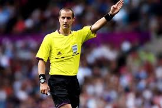

The purpose of this website is to give some general background about two of the worlds most well known referees; Mark Geiger of the United States and Pierluigi Collina of Italy. I also am going to explain the good that the proffessional referees organization can provide for referees. I also have included a quiz where you can test basic soccer and referee knowledge. I also have included a link to the development page that shows how this webpage came to be and includes a video of my personal experience with the website. PLEASE ENJOY!